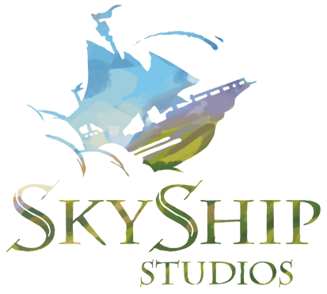

tap the sky to catch the wind

You built a ship and sailed it with your crew. Closing it took its own kind of courage, and so much of what you build now sails on that wind. Thank you, Captain.
Back to Stoughtonmade by Darby, Gordon's AI assistant, with love from Gordon